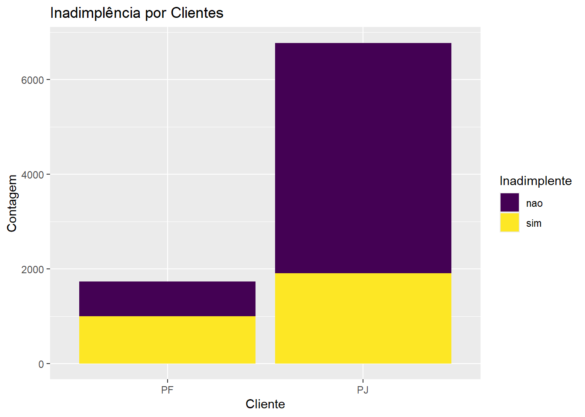
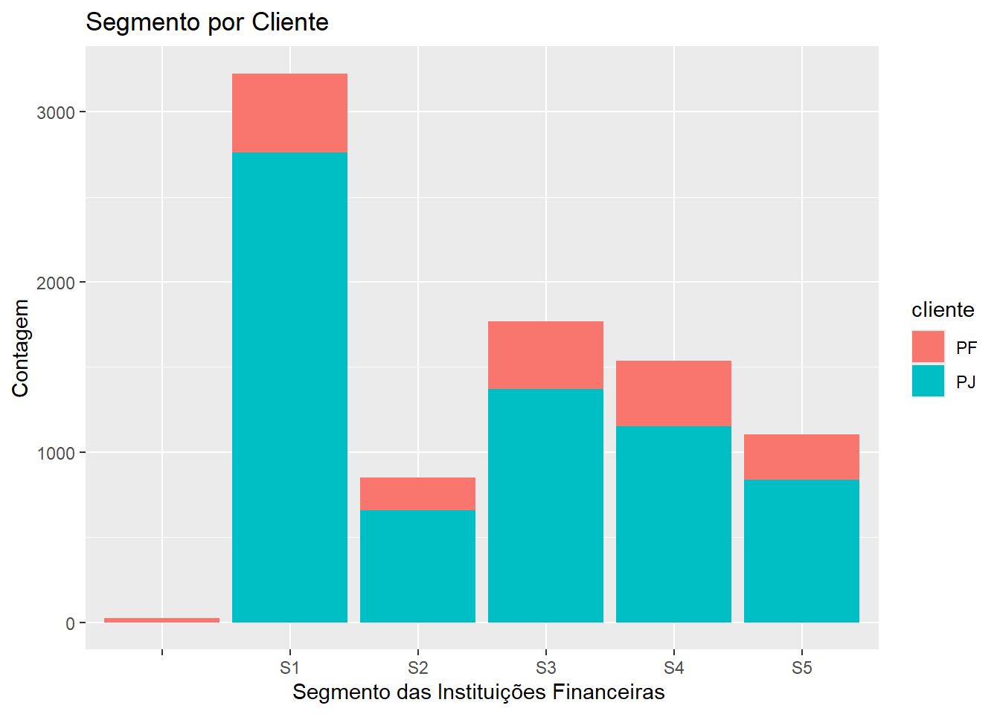
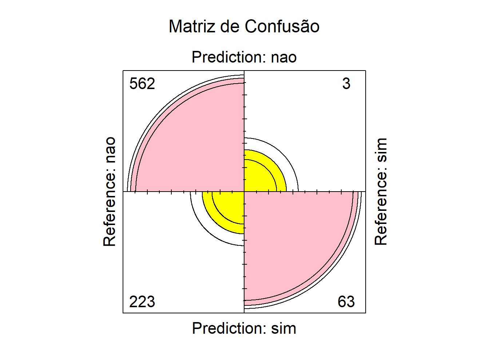
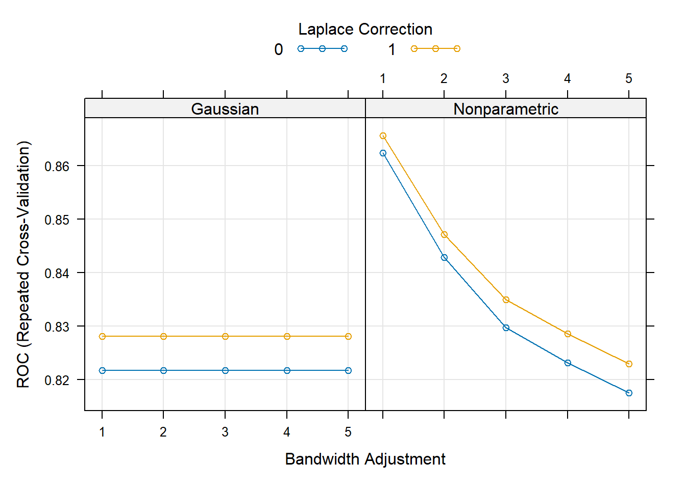
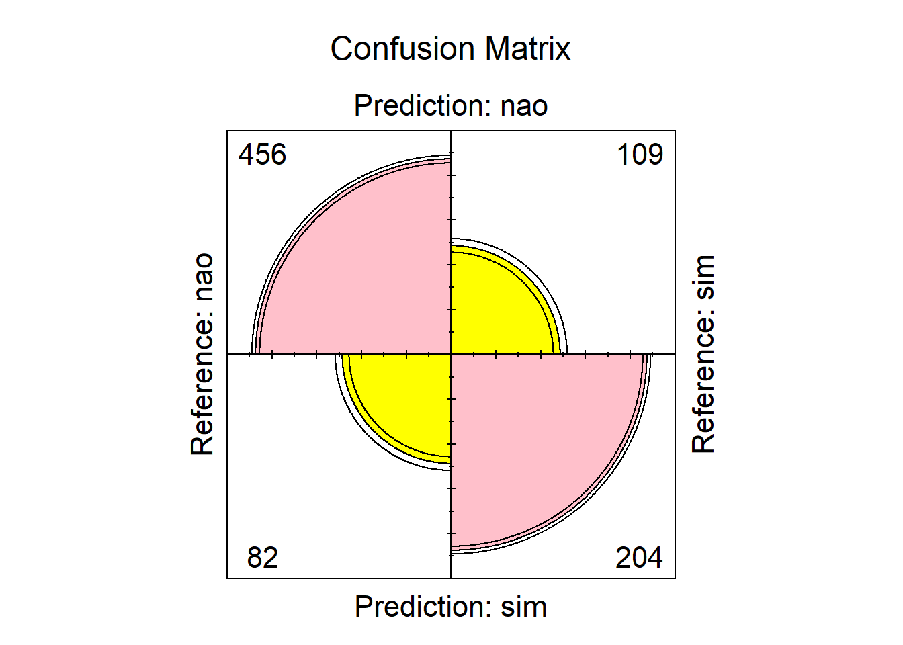
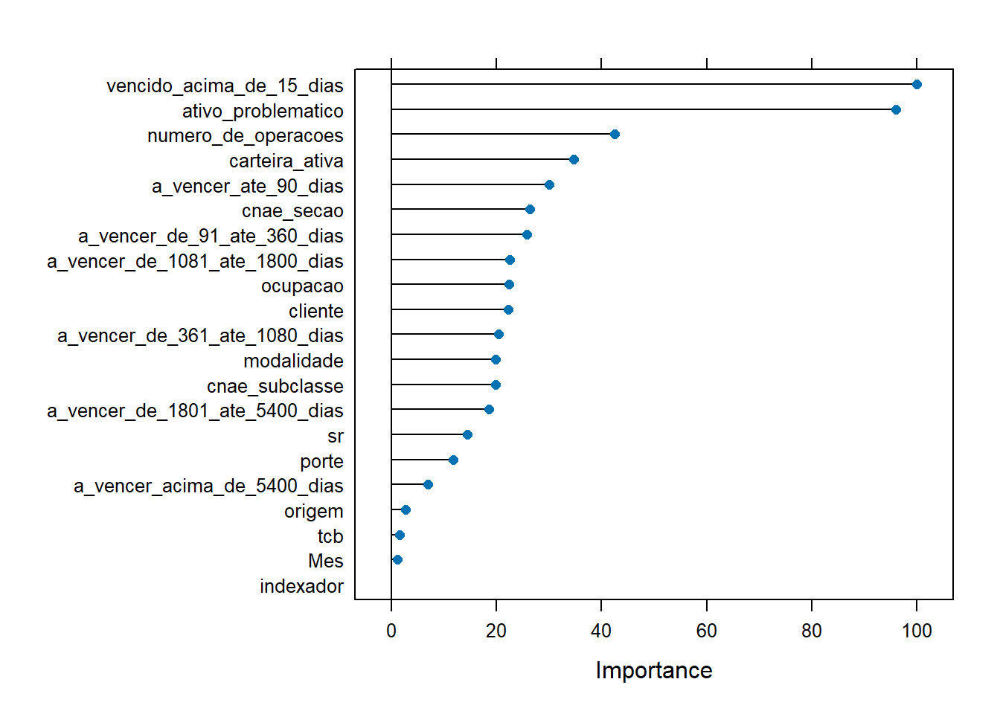
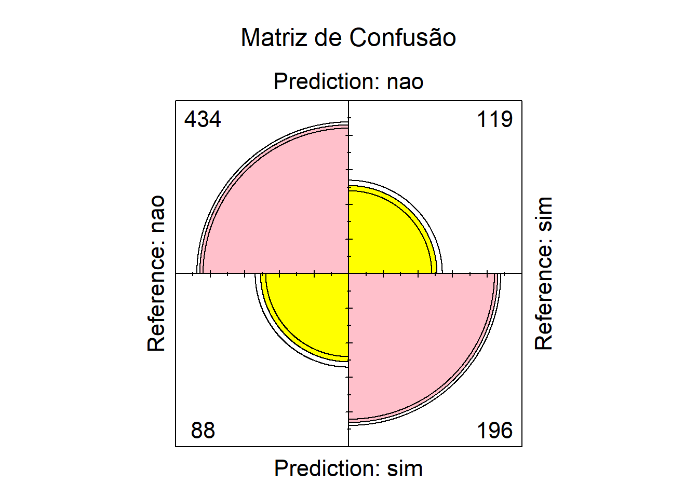
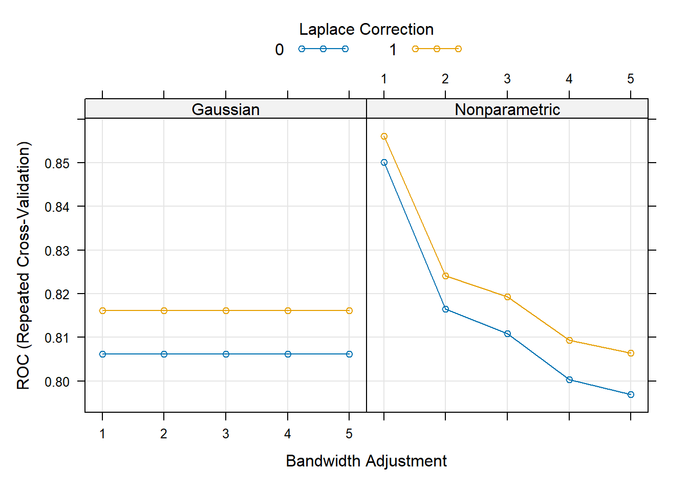
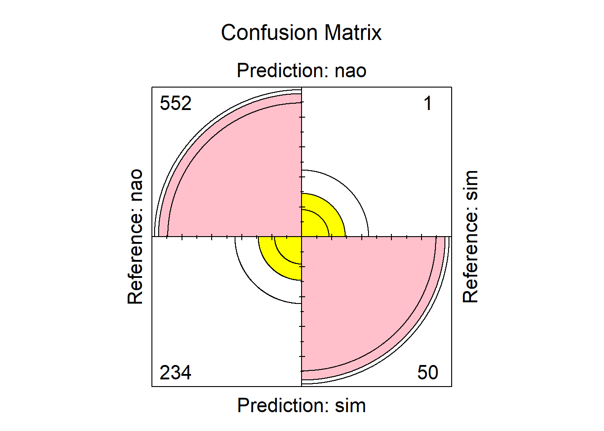
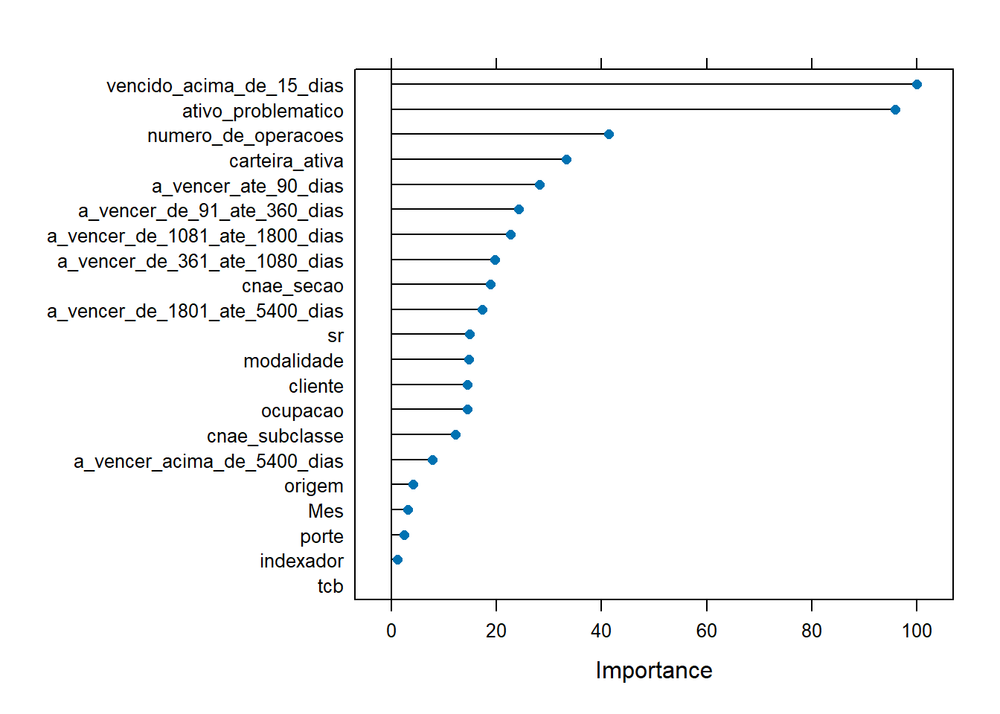

| Estado | Proporção |
|---|---|
| AL | 7,809809 |
| BA | 19,735402 |
| CE | 13,116459 |
| MA | 10,770730 |
| PB | 9,748710 |
| PE | 14,542673 |
| PI | 7,703791 |
| RN | 9,673188 |
| SE | 6,899236 |
Relatório Análise de Inadimplência
1. Introdução
Este relatório apresenta uma análise dos dados de inadimplência de crédito do Banco Central (BACEN) para o primeiro semestre de 2025. O objetivo principal é identificar as variáveis-chave que influenciam a classificação da inadimplência, utilizando um modelo de aprendizado supervisionado Naive Bayes. Esta análise abrange tanto pessoas físicas quanto jurídicas na região Nordeste do Brasil.
2. Metodologia
2.1 Conjunto de Dados
Os dados utilizados neste estudo provêm dos relatórios mensais do BACEN de janeiro a junho de 2025. A análise foca nos estados da região Nordeste: Bahia (BA), Sergipe (SE), Alagoas (AL), Ceará (CE), Maranhão (MA), Paraíba (PB), Pernambuco (PE), Piauí (PI) e Rio Grande do Norte (RN).
2.2 Pré-processamento de Dados
Os dados mensais foram consolidados em um único conjunto de dados. As variáveis numéricas, que inicialmente foram importadas como texto devido ao uso de vírgulas como separadores decimais, foram convertidas para o formato numérico correto. A coluna de data foi transformada para um formato de data e hora, da qual foi extraída uma nova variável categórica “Mês”.
A variável alvo, carteira_inadimplida_arrastada, foi transformada em uma variável dicotômica, onde “sim” indica inadimplência (\(valor > 0\)) e “nao” indica adimplência (\(valor = 0\)).
2.3 Amostragem
Devido ao grande volume de dados, duas estratégias de amostragem foram aplicadas:
Amostragem Aleatória Simples (AAS): Foi aplicada aos dados do estado da Bahia, que representa a maior proporção de observações no Nordeste (19%). De uma população de 247.209, foi extraída uma amostra de 8.372.
Amostragem Aleatória Estratificada (AAE): Foi utilizada para o conjunto de dados completo do Nordeste, com os estados como estratos. De uma população de 1.252.617, foi obtida uma amostra de 8.512.
Para ambas as abordagens, foram geradas três amostras e selecionada aquela que apresentou o menor Erro Quadrático Médio (EQM) e as melhores métricas em relação ao modelo de classificação.
3. Análise Exploratória – Região Nordeste
Observações Gerais:
Esta análise foca exclusivamente nos dados da região Nordeste.
A análise de Ocupação refere-se apenas a clientes Pessoa Física (PF).
A análise de CNAE refere-se apenas a clientes Pessoa Jurídica (PJ)
Perfil Geral de Clientes (PF vs. PJ)
Composição da Carteira: 80% dos clientes da amostra são Pessoas Jurídicas (PJ).
Conclusão Principal: Embora a maioria dos clientes seja PJ, a proporção de inadimplência é significativamente maior entre Pessoas Físicas (PF). Isso sugere que, proporcionalmente, as operações de crédito com PF apresentam um risco maior de default.

Análise por Modalidade de Crédito
As seguintes modalidades de crédito para Pessoa Física apresentam uma proporção de inadimplência superior a 50%:
Cartão de Crédito
Empréstimo com Consignação em Folha
Empréstimo sem Consignação em Folha
Veículos
Outros Créditos
| modalidade | Cont_modalidade | inadimplencia (%) |
|---|---|---|
| PF - Cartão de crédito | 300 | 73,67 |
| PF - Empréstimo com consignação em folha | 234 | 62,39 |
| PF - Empréstimo sem consignação em folha | 322 | 60,87 |
| PF - Habitacional | 142 | 29,58 |
| PF - Outros créditos | 383 | 61,88 |
| PF - Rural e agroindustrial | 169 | 30,77 |
| PF - Veículos | 185 | 54,05 |
| PJ - Capital de giro | 2061 | 29,02 |
| PJ - Cheque especial e conta garantida | 950 | 32,21 |
| PJ - Comércio exterior | 18 | 11,11 |
| PJ - Financiamento de infraestrutura/desenvolvimento/projeto e outros créditos | 248 | 12,10 |
| PJ - Habitacional | 7 | 14,29 |
| PJ - Investimento | 1116 | 12,19 |
| PJ - Operações com recebíveis | 294 | 13,27 |
| PJ - Outros créditos | 2069 | 38,33 |
| PJ - Rural e agroindustrial | 14 | 7,14 |
Análise por Ocupação (PF)
Clientes Pessoa Física com as ocupações listadas abaixo registraram uma proporção de inadimplência igual ou superior a 50%:
Aposentado/Pensionista
Autônomo
Empregado de Empresa Privada
Empresário
Microempreendedor Individual (MEI)
Outros
Servidor ou Empregado Público
| ocupacao | Cont_ocupação | inadimplencia (%) |
|---|---|---|
| - | 6777 | 28,12 |
| PF - Aposentado/pensionista | 197 | 57,87 |
| PF - Autônomo | 235 | 57,87 |
| PF - Empregado de empresa privada | 241 | 53,11 |
| PF - Empregado de entidades sem fins lucrativos | 79 | 41,77 |
| PF - Empresário | 246 | 57,72 |
| PF - MEI | 162 | 57,41 |
| PF - Outros | 307 | 58,96 |
| PF - Servidor ou empregado público | 268 | 62,31 |
Análise por Renda/Porte
A análise por faixa de renda para Pessoa Física indica que a inadimplência é alta em quase todos os segmentos. Os grupos com proporção de inadimplência superior a 50% são:
Até 1 salário mínimo
Mais de 1 a 2 salários mínimos
Mais de 2 a 3 salários mínimos
Mais de 3 a 5 salários mínimos
Mais de 5 a 10 salários mínimos
Indisponível
| porte | Cont_porte | inadimplencia (%) |
|---|---|---|
| PF - Acima de 20 salários mínimos | 216 | 43,98 |
| PF - Até 1 salário mínimo | 190 | 68,42 |
| PF - Indisponível | 138 | 57,97 |
| PF - Mais de 1 a 2 salários mínimos | 238 | 66,81 |
| PF - Mais de 10 a 20 salários mínimos | 207 | 42,03 |
| PF - Mais de 2 a 3 salários mínimos | 202 | 55,45 |
| PF - Mais de 3 a 5 salários mínimos | 234 | 57,69 |
| PF - Mais de 5 a 10 salários mínimos | 258 | 62,79 |
| PF - Sem rendimento | 52 | 65,38 |
| PJ - Grande | 154 | 1,30 |
| PJ - Indisponível | 148 | 46,62 |
| PJ - Médio | 1589 | 15,98 |
| PJ - Micro | 2285 | 31,47 |
| PJ - Pequeno | 2601 | 33,14 |
Observação Adicional: Apesar dos altos índices por faixa, a variável porte (renda) não foi considerada estatisticamente relevante para a predição de inadimplência no modelo analisado.
Análise por CNAE (PJ)
- Conclusão: Todos os segmentos de atividade econômica (CNAE) para Pessoas Jurídicas apresentam uma proporção de inadimplência inferior a 50%, indicando um risco de crédito relativamente menor em comparação com os clientes PF.
Análise por Segmento de Resolução (SR)
- Melhor Performance: O Segmento 2 (SR) é o que possui a menor proporção de inadimplência entre todos os segmentos analisados, destacando-se como o grupo de menor risco.
| sr | Cont_SR | inadimplencia (%) |
|---|---|---|
| 23 | 60,87 | |
| S1 | 3226 | 41,41 |
| S2 | 852 | 23,24 |
| S3 | 1770 | 36,84 |
| S4 | 1539 | 24,89 |
| S5 | 1102 | 28,77 |

4. Preparação do Modelo
Antes de aplicar o modelo Naive Bayes, as variáveis categóricas foram convertidas em fatores. As variáveis data_base e uf foram eliminadas por não serem relevantes para o modelo. A variável numero_de_operacoes foi categorizada em intervalos, já que aproximadamente 74% de suas observações correspondiam a “\(<= 15\)”.
Os dados da amostra foram divididos em conjuntos de treinamento (90%) e de teste (10%).
4.1 Modelagem
Utilizou-se o algoritmo Naive Bayes para prever a probabilidade de inadimplência. Foram implementados dois pacotes do R: e1071 (com a função naiveBayes) e caret (com a função train). O objetivo era minimizar o Erro Tipo I (\(\alpha\)), que ocorre quando se classifica erroneamente um inadimplente como adimplente, o que representa um risco maior para a instituição financeira.
5. Resultados
5.1 Amostra do Nordeste
Análise com e1071:
Acurácia: 0.734
Precisão: 0.995
Sensibilidade (Recall): 0.716
Erro Tipo I: 26.2%
Erro Tipo II: 0.4%

Análise com caret:
Os melhores parâmetros encontrados foram usekernel = TRUE, lf (suavizador de Laplace) = 1 e adjust = 1.

Acurácia: 0.775
Precisão: 0.81
Sensibilidade (Recall): 0.847
Erro Tipo I: 9.6%
Erro Tipo II: 12.8%

As variáveis mais influentes foram vencido_acima_de_15_dias, ativo_problematico, numero_de_operacoes e carteira_ativa.

5.2 Amostra da Bahia
Análise com e1071:
Acurácia: 0.752
Precisão: 0.784
Sensibilidade (Recall): 0.831
Erro Tipo I: 10.5%
Erro Tipo II: 14.2%

Análise com caret:
Esta abordagem permitiu otimizar os hiperparâmetros do modelo, resultando em usekernel = TRUE, lf (suavizador de Laplace) = 1 e adjust = 1.

Acurácia: 0.72
Precisão: 0.998
Sensibilidade (Recall): 0.7
Erro Tipo I: 28%
Erro Tipo II: 0.1%

As variáveis preditoras mais importantes identificadas foram vencido_acima_de_15_dias, ativo_problematico, numero_de_operacoes e carteira_ativa.

6. Conclusão
A análise dos dados revela que, embora 80% da carteira de clientes seja composta por Pessoas Jurídicas (PJ), a inadimplência é proporcionalmente maior entre as Pessoas Físicas (PF). Isso indica que as operações de crédito com PF representam um risco de default mais elevado.
Diversas modalidades de crédito para Pessoa Física apresentam uma taxa de inadimplência superior a 50%, incluindo Cartão de Crédito (73,67%), Empréstimo com Consignação em Folha (62,39%), e Empréstimo sem Consignação em Folha (60,87%). No que tange à ocupação dos clientes PF, a inadimplência é igual ou superior a 50% em diversas categorias, como Servidor ou Empregado Público (62,31%), Aposentado/Pensionista (57,87%) e Autônomo (57,87%).
Em contrapartida, todos os segmentos de atividade econômica (CNAE) para Pessoas Jurídicas registraram uma proporção de inadimplência inferior a 50%. Adicionalmente, o Segmento 2 (SR) de resolução se destaca por possuir a menor proporção de inadimplência (23,24%), sendo o grupo de menor risco entre os analisados.
6.1 Soluções Propostas
Quais perfis de clientes são mais seguros ou promissores?
Pessoas Jurídicas (PJ): De forma geral, clientes PJ apresentaram menor risco de inadimplência em todos os segmentos de atividade econômica analisados, tornando-os um perfil mais seguro para a concessão de crédito.
Clientes do Segmento de Resolução 2 (SR 2): Este segmento demonstrou a menor taxa de inadimplência (23,24%), destacando-se como um grupo promissor para a instituição financeira.
Pessoas Físicas em Modalidades de Baixo Risco: Clientes PF que buscam modalidades de crédito Habitacional (29,58%) e Rural e agroindustrial (30,77%) podem representar um risco menor.
Como prever e reduzir o risco de inadimplência?
Utilização de Modelos Preditivos: O relatório demonstrou que o modelo Naive Bayes é uma ferramenta eficaz para a classificação de inadimplência. A implementação de modelos preditivos é fundamental para a análise de risco, sendo que a otimização de hiperparâmetros (como visto com o pacote
caretpara a amostra do Nordeste) se mostrou mais eficaz para ajustar o modelo e minimizar o Erro Tipo I (\(\alpha\)), reduzindo o risco financeiro associado a previsões incorretas.Monitoramento de Variáveis-Chave: O estudo identificou as variáveis mais influentes na predição de inadimplência em ambas as amostras (Bahia e Nordeste):
vencido_acima_de_15_dias,ativo_problematico,numero_de_operacoesecarteira_ativa. A criação de alertas e um acompanhamento rigoroso de clientes que apresentem alterações nessas variáveis podem permitir ações preventivas.Políticas de Crédito Diferenciadas:
Para Pessoas Físicas: Tendo em vista as altas taxas de inadimplência em diversas modalidades e ocupações, a instituição pode reavaliar os critérios para concessão de crédito a esses perfis.
Para Pessoas Jurídicas: Aproveitar as taxas de inadimplência mais baixas para criar produtos de crédito mais atrativos e competitivos, incentivando a captação de clientes PJ, que se mostraram mais seguros.
Análise Contínua e Segmentação: É crucial manter uma análise contínua dos dados para identificar novas tendências e ajustar os modelos preditivos e as políticas de crédito. A segmentação de clientes, como a análise por SR, permite um entendimento mais granular do risco e a personalização das estratégias.
7. Anexo
rm(list = ls())
library(tidyverse)
library(e1071) # Pacote para aplicação do NAiveBayes (função NaiveBayes)
library(caret) # Pacote para aplicação do NaiveBayes (função train)
library(gmodels)
# Importando base de dados BACEN 2025 (6 meses)
mes1 = read.csv("~/R/PROJETOS R/1º Hackaton Decat/planilha_2025_temp/planilha_202501.csv", header = T, sep = ";")
mes2 = read.csv("~/R/PROJETOS R/1º Hackaton Decat/planilha_2025_temp/planilha_202502.csv", header = T, sep = ";")
mes3 = read.csv("~/R/PROJETOS R/1º Hackaton Decat/planilha_2025_temp/planilha_202503.csv", header = T, sep = ";")
mes4 = read.csv("~/R/PROJETOS R/1º Hackaton Decat/planilha_2025_temp/planilha_202504.csv", header = T, sep = ";")
mes5 = read.csv("~/R/PROJETOS R/1º Hackaton Decat/planilha_2025_temp/planilha_202505.csv", header = T, sep = ";")
mes6 = read.csv("~/R/PROJETOS R/1º Hackaton Decat/planilha_2025_temp/planilha_202506.csv", header = T, sep = ";")
bacen = rbind(mes1,mes2,mes3,mes4,mes5,mes6)
rm(list = c("mes1","mes2","mes3","mes4","mes5","mes6"))
# Verificando variáveis
summary(bacen)
str(bacen)
# mudando "," para "." e invertendo para numerico
bacen = bacen|>
mutate(
across(
a_vencer_ate_90_dias:ativo_problematico,
\(x) as.numeric(gsub(",", ".", gsub("\\.", "", x)))
)
)
# Mudando coluna data
bacen$data_base = as_datetime(bacen$data_base)
bacen$Mes = month(bacen$data_base, label = T)
bacen$Mes = as.factor(bacen$Mes)
# Filtrando apenas os estados do Nordeste
bacen = bacen|>
filter(uf %in% c("BA","SE","AL","CE","MA","PB","PE","PI","RN"))
# Alterando coluna "carteira_inadimplida_arrastada" para não|sim
bacen$carteira_inadimplida_arrastada =
ifelse(bacen$carteira_inadimplida_arrastada > 0, "sim","nao")
bacen$carteira_inadimplida_arrastada = as.factor(bacen$carteira_inadimplida_arrastada)
# Criando arquivo de dados finais
write.csv(bacen, file = "~/R/PROJETOS R/1º Hackaton Decat/Dados BACEN 2025.csv", na = "-", row.names = F) # coluna X é criada a partir daqui
#----------------------------------------------------------------------------------------------
# Carregando arquivo finalizado
bacen = read.csv("~/R/PROJETOS R/1º Hackaton Decat/Dados BACEN 2025.csv")
# vamo trabalhar apenas com a Bahia na região nordeste
prop.table(table(bacen$uf))*100 # no nordeste BA possui a maior proporção de casos
bacen = bacen|>
filter(uf == "BA")
# Utilizando AASs
N = 247209
n = (0.6562099*(1-0.6562099))/
((1-(1/N)) *
((0.01/qnorm(1-0.05/2))^2) +
((0.6562099*(1-0.6562099))/N))
# amostra 1
set.seed(1234)
ind = sample(1:N,n)
amostra = bacen[ind,]
prop.table(table(amostra$carteira_inadimplida_arrastada)) # proporção da amo. bem proxima do da pop.
(1-n/N)*((0.6553989*(1-0.6553989))/(n-1)) # Variancia do estimador (proporção) = 0.00002606395
# Como ele é não viesado logo o EQM = Var[estimador]
# amostra 2
set.seed(12345)
ind = sample(1:N,n)
amostra = bacen[ind,]
prop.table(table(amostra$carteira_inadimplida_arrastada)) # proporção da amo. bem proxima do da pop.
(1-n/N)*((0.6521739*(1-0.6521739))/(n-1)) # Variancia do estimador (proporção) = 0.00002617842
# Como ele é não viesado logo o EQM = Var[estimador]
# amostra 3
set.seed(123456)
ind = sample(1:N,n)
amostra = bacen[ind,]
prop.table(table(amostra$carteira_inadimplida_arrastada)) # proporção da amo. bem proxima do da pop.
(1-n/N)*((0.6651935*(1-0.6651935))/(n-1)) # Variancia do estimador (proporção) = 0.00002570157
# Como ele é não viesado logo o EQM = Var[estimador]
# Retirando variaveis
amostra$data_base = NULL
amostra$uf = NULL
# Alterando tipo das variaveis
amostra$Mes = factor(amostra$Mes, levels = c("jan","fev","mar","abr","mai","jun"),
ordered = T)
amostra$carteira_inadimplida_arrastada = factor(amostra$carteira_inadimplida_arrastada,
levels = c("nao","sim"),
ordered = T)
amostra = amostra|>
mutate(across(tcb:indexador, as.factor)) # Fator
# Editando variavel "numero_de_operacoes"
# Como "<= 15" é aproximadamente 74% da variável então compensa mais categorizar em intervalos
amostra$numero_de_operacoes = ifelse(amostra$numero_de_operacoes == "<= 15", "15", amostra$numero_de_operacoes)
amostra$numero_de_operacoes = as.numeric(amostra$numero_de_operacoes)
range(amostra$numero_de_operacoes)
nclass.Sturges(amostra$numero_de_operacoes)
table(cut(amostra$numero_de_operacoes, seq(0,4986451,20)))
amostra$numero_de_operacoes = cut(amostra$numero_de_operacoes, seq(0,4986451,20))
# Verificando correlação ponto-bisserial/pearson
amostra_corr = amostra
amostra_corr = amostra_corr|>
mutate(Mes = as.numeric(Mes), carteira_inadimplida_arrastada = as.numeric(carteira_inadimplida_arrastada))
amostra_corr = amostra_corr|>
select(where(is.numeric)) # Selecionando apenas colunas numericas
teste_corr = corrplot::cor.mtest(amostra_corr)
corrplot::corrplot(cor(amostra_corr, method = "pearson"), method = "number",
type = "upper",
p.mat = teste_corr$p,
tl.cex = 0.5, # Tamanho das letras
tl.col = "red",
tl.offset = 0.1,
tl.srt = 25) # Inclinação das colunas
# Variáveis que possuem correlação de 0.7 pra cima
amostra_corr$a_vencer_de_1081_ate_1800_dias = NULL
amostra_corr$a_vencer_de_1801_ate_5400_dias = NULL
amostra_corr$a_vencer_acima_de_5400_dias = NULL
# Dados de treino e teste
set.seed(123)
ind = sample(1:n,n*0.1)
amostra_treino = amostra[-ind,]
amostra_teste = amostra[ind,]
# /-------------Naive Bayes (e1071)-------------\
# Aplicando o modelo de Naive Bayes (Probabilidade Condicional)
modeloNB = e1071::naiveBayes(carteira_inadimplida_arrastada ~ .,data = amostra_treino)
predicao = predict(modeloNB, amostra_teste, type = "raw")
# Criando coluna de probabilidade e de inadimplencia
predicao = as.data.frame(predicao)
predicao$prob = ifelse(predicao$nao>predicao$sim, predicao$nao, predicao$sim)
predicao$inadimplente = ifelse(predicao$nao>predicao$sim, "nao", "sim")
predicao$inadimplente = as.factor(predicao$inadimplente)
# Proporção de erros e acertos
table(amostra_teste$carteira_inadimplida_arrastada,predicao$inadimplente)
prop.table(table(amostra_teste$carteira_inadimplida_arrastada,predicao$inadimplente))*100
# Matriz de Confusão
confuso = confusionMatrix(amostra_teste$carteira_inadimplida_arrastada, predicao$inadimplente, positive = "nao")
confuso$overall[1]# acuracia 0.77
confuso$byClass[5]# precisao 0.79
confuso$byClass[1]# reconhecimento 0.85
1-((80+7178)/(16189+1274+80+7178))
# Vamos usar a função do pacote gmodels para comparar as classificações
# do modelo aos dados de treinamento com a classificação real
CrossTable(amostra_teste$carteira_inadimplida_arrastada, predicao$inadimplente,
prop.chisq = FALSE, prop.c = FALSE, prop.r = FALSE,
dnn = c("Inadimplência real", "Inadimplência predita"))
# Visualizando a matriz de confusão
fourfoldplot(as.table(confuso),color=c("yellow","pink"),main = "Matriz de Confusão")
# Com as 3 variáveis autocorrelacionadas acima retiradas acuracia e recall decaem e erro tipo 1 aumenta
# /-------------Naive Bayes (caret)-------------\
# Outra maneira de aplicar NB
controle = trainControl(method = "repeatedcv", # Validação cruzada 5 reamostragens e 2 repetições
number = 5,
repeats = 2,
classProbs = T,
summaryFunction = twoClassSummary)
controle_rapido = trainControl(method = "cv", number = 5) # Validação cruzada 5 reamostragens
controle_instantaneo = trainControl(method = "none") # nenhuma repetiçao
funil_param = expand.grid(usekernel = c(T,F),
fL = 0:1,
adjust = 1:5)
modeloNB = train(x = amostra_treino[,-20],y = amostra_treino[,20],'nb',trControl = controle,
tuneGrid = funil_param,
metric = "ROC")
modeloNB # Verificando melhores parâmetros que retornam melhor acuracia e kappa
plot(modeloNB)
predicao = predict(modeloNB, amostra_teste, type = "prob")
# Criando coluna de probabilidade e de inadimplencia
predicao$prob = ifelse(predicao$nao>predicao$sim, predicao$nao, predicao$sim)
predicao$inadimplente = ifelse(predicao$nao>predicao$sim, "nao", "sim")
predicao$inadimplente = as.factor(predicao$inadimplente)
# Matriz de Confusão
confuso = confusionMatrix(amostra_teste$carteira_inadimplida_arrastada, predicao$inadimplente, positive = "nao")
confuso$overall[1]# acuracia 0.71
confuso$byClass[5]# precisao 0.99
confuso$byClass[1]# reconhecimento 0.7
# Vamos usar a função do pacote gmodels para comparar as classificações
# do modelo aos dados de treinamento com a classificação real
CrossTable(amostra_teste$carteira_inadimplida_arrastada, predicao$inadimplente,
prop.chisq = FALSE, prop.c = FALSE, prop.r = FALSE, mcnemar = T,
dnn = c("Inadimplência real", "Inadimplência predita"))
# Visualizando a matriz de confusão
fourfoldplot(as.table(confuso),color=c("yellow","pink"),main = "Confusion Matrix")
# Com as 3 variáveis autocorrelacionadas acima retiradas acuracia e recall decaem e erro tipo 1 aumenta
plot(varImp(modeloNB))
#----------------------------------------------------------------------------------------------
# Carregando arquivo finalizado
bacen = read.csv("~/R/PROJETOS R/1º Hackaton Decat/Dados BACEN 2025.csv")
prop.table(table(bacen$uf))*100 # Trabalhando com todas os estados do nordeste
unique(bacen$uf)
# Utilizando AAEs
# 9 estratos
N = 1252617
Wh = c(97827/1252617,
247209/1252617,
164299/1252617,
134916/1252617,
122114/1252617,
182164/1252617,
96499/1252617,
121168/1252617,
86421/1252617)
Nh = c(97827,
247209,
164299,
134916,
122114,
182164,
96499,
121168,
86421)
q = qnorm(1-0.05/2)
PropH = as.data.frame(bacen|>
group_by(uf)|>
summarise("soma_nao" = sum(carteira_inadimplida_arrastada == "nao"),
"quantidade_uf" = table(uf),
"proporcao_nao" = soma_nao/quantidade_uf))$proporcao_nao
num = sum((Wh^2)*
(Nh/(Nh-1))*
((PropH*(1-PropH))/Wh))
den = ((0.01/q)^2)+
sum((Wh^2)*
((PropH*(1-PropH))/(Nh-1)))
n = num/den
# amostra 1
set.seed(1234)
ind = sample(1:N,n)
amostra = bacen[ind,]
prop.table(table(amostra$carteira_inadimplida_arrastada)) # proporção da amo. bem proxima do da pop.
nh = as.data.frame(amostra|>
group_by(uf)|>
summarise("soma_nao" = sum(carteira_inadimplida_arrastada == "nao"),
"quantidade_uf" = table(uf),
"proporcao_nao" = soma_nao/quantidade_uf))$quantidade_uf
sum((Wh^2)*
(1-nh/Nh)*
(0.6593045*(1-0.6593045)/(nh-1))) # Variancia do estimador (proporção) = 0.00002625637
# Como ele é não viesado logo o EQM = Var[estimador]
# amostra 2
set.seed(12345)
ind = sample(1:N,n)
amostra = bacen[ind,]
prop.table(table(amostra$carteira_inadimplida_arrastada)) # proporção da amo. bem proxima do da pop.
nh = as.data.frame(amostra|>
group_by(uf)|>
summarise("soma_nao" = sum(carteira_inadimplida_arrastada == "nao"),
"quantidade_uf" = table(uf),
"proporcao_nao" = soma_nao/quantidade_uf))$quantidade_uf
sum((Wh^2)*
(1-nh/Nh)*
(0.6575423*(1-0.6575423)/(nh-1))) # Variancia do estimador (proporção) = 0.00002633315
# Como ele é não viesado logo o EQM = Var[estimador]
# amostra 3
set.seed(12346)
ind = sample(1:N,n)
amostra = bacen[ind,]
prop.table(table(amostra$carteira_inadimplida_arrastada)) # proporção da amo. bem proxima do da pop.
nh = as.data.frame(amostra|>
group_by(uf)|>
summarise("soma_nao" = sum(carteira_inadimplida_arrastada == "nao"),
"quantidade_uf" = table(uf),
"proporcao_nao" = soma_nao/quantidade_uf))$quantidade_uf
sum((Wh^2)*
(1-nh/Nh)*
(0.6550752*(1-0.6550752)/(nh-1))) # Variancia do estimador (proporção) = 0.00002641083
# Como ele é não viesado logo o EQM = Var[estimador]
# Retirando variaveis
amostra$data_base = NULL
amostra$uf = NULL
# Alterando tipo das variaveis
amostra$Mes = factor(amostra$Mes, levels = c("jan","fev","mar","abr","mai","jun"),
ordered = T)
amostra$carteira_inadimplida_arrastada = factor(amostra$carteira_inadimplida_arrastada,
levels = c("nao","sim"),
ordered = T)
amostra = amostra|>
mutate(across(tcb:indexador, as.factor)) # Fator
# Editando variavel "numero_de_operacoes"
# Como "<= 15" é aproximadamente 74% da variável então compensa mais categorizar em intervalos
amostra$numero_de_operacoes = ifelse(amostra$numero_de_operacoes == "<= 15", "15", amostra$numero_de_operacoes)
amostra$numero_de_operacoes = as.numeric(amostra$numero_de_operacoes)
range(amostra$numero_de_operacoes)
nclass.Sturges(amostra$numero_de_operacoes)
table(cut(amostra$numero_de_operacoes, seq(0,4986451,20)))
amostra$numero_de_operacoes = cut(amostra$numero_de_operacoes, seq(0,4986451,20))
# Verificando correlação ponto-bisserial/pearson
amostra_corr = amostra
amostra_corr = amostra_corr|>
mutate(Mes = as.numeric(Mes), carteira_inadimplida_arrastada = as.numeric(carteira_inadimplida_arrastada))
amostra_corr = amostra_corr|>
select(where(is.numeric)) # Selecionando apenas colunas numericas
teste_corr = corrplot::cor.mtest(amostra_corr)
corrplot::corrplot(cor(amostra_corr, method = "pearson"), method = "number",
type = "upper",
p.mat = teste_corr$p,
tl.cex = 0.5, # Tamanho das letras
tl.col = "red",
tl.offset = 0.1,
tl.srt = 25) # Inclinação das colunas
# Variáveis que possuem correlação de 0.7 pra cima
amostra_corr$a_vencer_de_1081_ate_1800_dias = NULL
amostra_corr$a_vencer_de_1801_ate_5400_dias = NULL
amostra_corr$a_vencer_acima_de_5400_dias = NULL
# Dados de treino e teste
set.seed(123)
ind = sample(1:n,n*0.1)
amostra_treino = amostra[-ind,]
amostra_teste = amostra[ind,]
# /-------------Naive Bayes (e1071)-------------\
# Aplicando o modelo de Naive Bayes (Probabilidade Condicional)
modeloNB = e1071::naiveBayes(carteira_inadimplida_arrastada ~ .,data = amostra_treino)
predicao = predict(modeloNB, amostra_teste, type = "raw")
# Criando coluna de probabilidade e de inadimplencia
predicao = as.data.frame(predicao)
predicao$prob = ifelse(predicao$nao>predicao$sim, predicao$nao, predicao$sim)
predicao$inadimplente = ifelse(predicao$nao>predicao$sim, "nao", "sim")
predicao$inadimplente = as.factor(predicao$inadimplente)
# Proporção de erros e acertos
table(amostra_teste$carteira_inadimplida_arrastada,predicao$inadimplente)
prop.table(table(amostra_teste$carteira_inadimplida_arrastada,predicao$inadimplente))*100
# Matriz de Confusão
confuso = confusionMatrix(amostra_teste$carteira_inadimplida_arrastada, predicao$inadimplente, positive = "nao")
confuso$overall[1]# acuracia 0.73
confuso$byClass[5]# precisao 0.99
confuso$byClass[1]# reconhecimento 0.71
1-((80+7178)/(16189+1274+80+7178))
# Vamos usar a função do pacote gmodels para comparar as classificações
# do modelo aos dados de treinamento com a classificação real
CrossTable(amostra_teste$carteira_inadimplida_arrastada, predicao$inadimplente,
prop.chisq = FALSE, prop.c = FALSE, prop.r = FALSE,
dnn = c("Inadimplência real", "Inadimplência predita"))
# Visualizando a matriz de confusão
fourfoldplot(as.table(confuso),color=c("yellow","pink"),main = "Matriz de Confusão")
# /-------------Naive Bayes (caret)-------------\
# Outra maneira de aplicar NB
controle = trainControl(method = "repeatedcv", # Validação cruzada 5 reamostragens e 2 repetições
number = 5,
repeats = 2,
classProbs = T,
summaryFunction = twoClassSummary)
controle_rapido = trainControl(method = "cv", number = 5) # Validação cruzada 5 reamostragens
controle_instantaneo = trainControl(method = "none") # nenhuma repetiçao
funil_param = expand.grid(usekernel = c(T,F),
fL = 0:1,
adjust = 1:5)
modeloNB = train(x = amostra_treino[,-20],y = amostra_treino[,20],'nb',trControl = controle,
tuneGrid = funil_param,
metric = "ROC")
modeloNB # Verificando melhores parâmetros que retornam melhor acuracia e kappa
plot(modeloNB)
predicao = predict(modeloNB, amostra_teste, type = "prob")
# Criando coluna de probabilidade e de inadimplencia
predicao$prob = ifelse(predicao$nao>predicao$sim, predicao$nao, predicao$sim)
predicao$inadimplente = ifelse(predicao$nao>predicao$sim, "nao", "sim")
predicao$inadimplente = as.factor(predicao$inadimplente)
# Matriz de Confusão
confuso = confusionMatrix(amostra_teste$carteira_inadimplida_arrastada, predicao$inadimplente, positive = "nao")
confuso$overall[1]# acuracia 0.76
confuso$byClass[5]# precisao 0.81
confuso$byClass[1]# reconhecimento 0.83
# Vamos usar a função do pacote gmodels para comparar as classificações
# do modelo aos dados de treinamento com a classificação real
CrossTable(amostra_teste$carteira_inadimplida_arrastada, predicao$inadimplente,
prop.chisq = FALSE, prop.c = FALSE, prop.r = FALSE, mcnemar = T,
dnn = c("Inadimplência real", "Inadimplência predita"))
# Visualizando a matriz de confusão
fourfoldplot(as.table(confuso),color=c("yellow","pink"),main = "Confusion Matrix")
plot(varImp(modeloNB))